A retro, terminal-styled desktop app that hunts down duplicate and near-duplicate photos and videos — and cleans up the extra movie and TV copies hiding in your Radarr, Sonarr, Plex and Jellyfin libraries. Safely: nothing is deleted, everything can be undone.
Exact copies and look-alikes — resized, re-saved, or back-to-back burst shots — found with perceptual fingerprints. Empty folders are listed for cleanup too.
Finds extra copies, stray folders and empty folders in your Radarr and Sonarr libraries. Move extras to a default or a browsed location; the file the manager tracks is always kept.
Hides the review folder from your media server (Plex or Jellyfin) and asks it to rescan after any change, so your library stays in sync.
Nothing is ever deleted. Extras move to a _review folder with full undo, and a group is skipped unless something is kept.
Runs on your own PC at 127.0.0.1. Your files, API keys and server tokens never leave your machine.
On GitHub for anyone to read, run and improve. No account, no cloud, no tracking.
Read the install guide to set it up on Windows or Mac, then the help guide for a walkthrough of every page and scan. When you're ready, grab the latest build from the releases page.